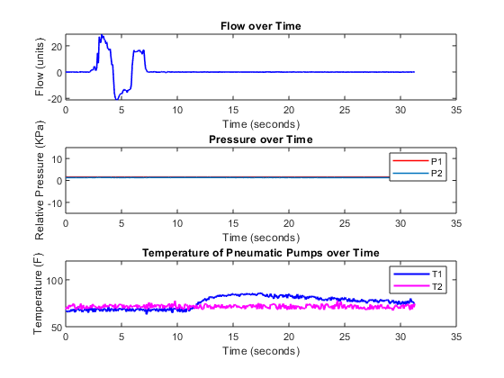
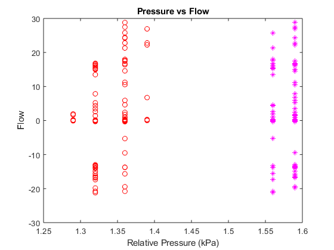

Contents
filename = '';
SensorData = TDMS_getStruct(filename);
Time = transpose(SensorData.Data.ESPTime.data);
Time = Time - Time(1);
P1 = transpose(SensorData.Data.P1.data);
P2 = transpose(SensorData.Data.P2.data);
T1 = transpose(SensorData.Data.T1.data);
T2 = transpose(SensorData.Data.T2.data);
Flow = transpose(SensorData.Data.Flow.data);
SensorDataTable = table(Time, Flow, P1, P2, T1, T2);
Plots of Flow and Pressure vs Time
figure(1)
subplot(3,1,1)
plot(Time,Flow,'b','LineWidth',1.2)
xlabel('Time (seconds)')
ylabel('Flow (units)')
title('Flow over Time')
subplot(3,1,2)
plot(Time,P1,'r','LineWidth',1.2)
hold on
plot(Time,P2,'LineWidth',1.2)
ylim([-15 15])
xlabel('Time (seconds)')
ylabel('Relative Pressure (KPa)')
title('Pressure over Time')
legend('P1','P2')
hold off
subplot(3,1,3)
plot(Time,T1,'b','LineWidth',1.5)
hold on
plot(Time,T2,'m','LineWidth',1.5)
ylim([50 120])
xlabel('Time (seconds)')
ylabel('Temperature (F)')
legend('T1','T2')
title('Temperature of Pneumatic Pumps over Time')
hold off

Plot of Pressure vs Flow
figure(2)
plot(P1,Flow,'m*')
hold on
plot(P2,Flow,'ro')
xlabel('Relative Pressure (kPa)')
ylabel('Flow')
title('Pressure vs Flow')
hold off
